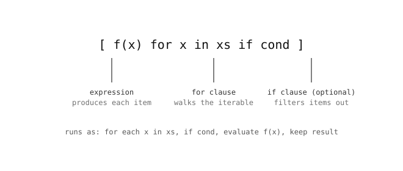

2.30. 推导式¶
推导式 用一个单独的表达式，从一个已有的可迭代对象构建出新的列表、集合、字典或生成器。它替代了那种常见的模式：先从一个空容器开始，再在循环中不断追加。
2.30.1. 列表推导式¶
squares = [x * x for x in range(5)]
print(squares)
输出:
[0, 1, 4, 9, 16]
用展开形式写出的同一个循环：
squares = []
for x in range(5):
squares.append(x * x)
推导式形式是一个就地构建列表的表达式。这里没有 squares = []，也没有 .append——结果就是推导式的值。

开头的表达式生成每一项；for 子句命名循环变量；可选的 if 过滤掉某些项。¶
2.30.2. 用 if 进行过滤¶
可选的 if 子句只保留符合条件的项：
evens = [x for x in range(10) if x % 2 == 0]
print(evens)
输出:
[0, 2, 4, 6, 8]
过滤器在开头的表达式之前运行——先检查 x % 2 == 0；只有匹配的值才会到达 x 用于输出。
2.30.3. 字典与集合推导式¶
同样的写法也适用于字典和集合字面量。
字典推导式 在 for 之前有一个 key: value 对：
squares = {x: x * x for x in range(5)}
print(squares)
输出:
{0: 0, 1: 1, 2: 4, 3: 9, 4: 16}
集合推导式 使用花括号和单个表达式：
unique_lengths = {len(w) for w in ["a", "bb", "c", "bb"]}
print(unique_lengths)
输出:
{1, 2}
2.30.4. 生成器表达式¶
圆括号产生的是 生成器表达式，而不是列表。其中的值按需逐个计算：
total = sum(x * x for x in range(1000))
永远不会构建出包含一百万项的列表。这些值会一个接一个地流入 sum()，它把它们相加，并在处理过程中逐个丢弃。
当把值馈送给归约函数（sum()、max()、any()、all()）或任何其他消费迭代器的代码时，生成器表达式是正确的选择——它们节省了等价列表会占用的内存。
2.30.5. 不应 使用推导式的情况¶
推导式很简洁，但并不总是更清晰。在以下情况下，请选用普通的 for 循环：
主体需要不止一个语句（推导式恰好只能容纳一个表达式）。
主体有副作用（打印、写入文件）——推导式用于 构建 一个集合，而不是用来执行动作。
过滤或转换的部分太多，以至于推导式不再能从左到右顺畅地读下来。